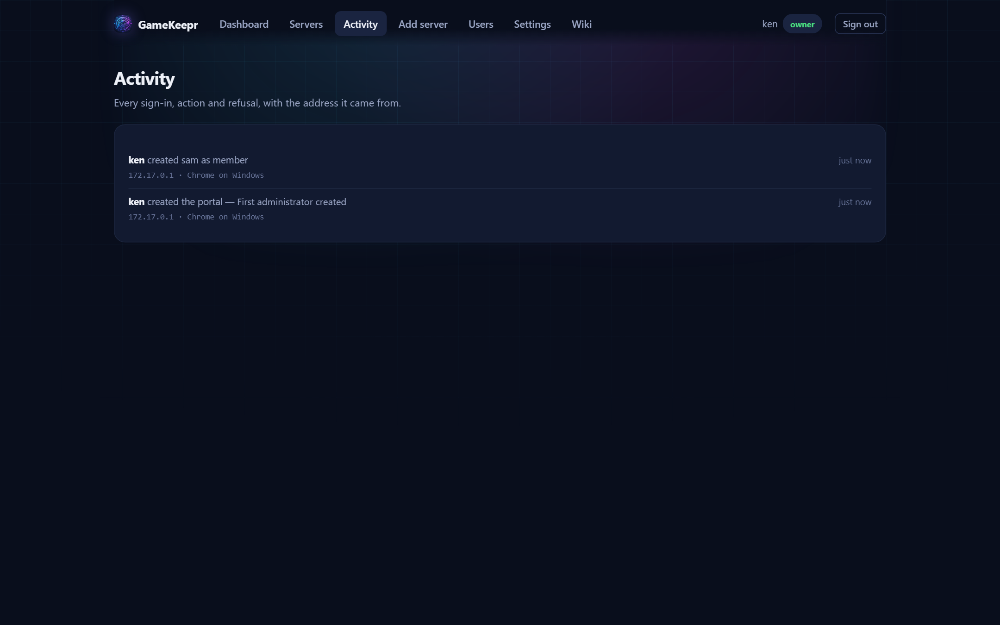

The security model

Written down so decisions are deliberate, not accidental.
The centre of gravity
GameKeepr holds the Docker socket, which is root-equivalent on the host. Everything else follows from taking that seriously:
- Clients never name containers. Every request addresses a server id, and the only ids that exist are the ones in
servers.jsonplus what the portal itself deployed. There is no code path from user input to an arbitrary container. - The portal never deploys privileged containers and never adds capabilities — refused in code, not in review.
- Operator accounts can change what runs on the machine. Treat handing out the operator role as handing out the machine.
Doors and identities
Two independent layers: Cloudflare Access (email codes, keeps the internet out) and GameKeepr's own accounts (scrypt-hashed passwords, per-browser sessions, roles). Rate-limited logins, one-time passwords for new accounts, sessions visible and revocable by the owner.
What third-party code gets to do
- Mods are downloaded only from known repositories or uploaded by an operator; archives are parsed and judged before a byte is unpacked (path traversal, symlinks, device nodes, compression bombs), hashes verified where the repository publishes them, optional scanners consulted. No report ever says "safe" — that claim is not available.
- Steam-composed servers trust Valve's official image and Steam's depots; the start script in between is generated, visible in the Files tab, and runs the game as an unprivileged user (
99:100), never root. - Templates are reviewed before deploy; untrusted publishers and privileged requests are refused.
Honesty rules
Things someone may not see answer 404, not 403 — a hidden server, a wiki page above your role. Telling someone a thing exists is itself a disclosure. Audit rows record rejections as well as successes; the rejections are the interesting ones. Secrets are encrypted at rest, masked in every UI, and never echoed back.
Narrowing the socket
The optional dockerproxy service in the compose file puts a filter between GameKeepr and the Docker socket, passing only the API groups it uses (containers, images, networks, exec, POST) and refusing the rest — volumes, secrets, swarm, system and plugins all answer 403. The preset is tested against every feature, deploys included.
Be honest about what it buys: GameKeepr legitimately needs container creation and exec, and the proxy cannot inspect request bodies, so it is defence-in-depth, not a sandbox. The unforgeable rule remains the one in GameKeepr's own code: no privileged containers, no client-named containers.
Unraid's built-in API (7.2+) offers scoped API keys, but its schema can control containers, not create them — nor exec, attach or read files — so it cannot carry GameKeepr's feature set today. Worth revisiting as it matures.
What to rotate when
SESSION_SECRET invalidates all sessions and stored integration secrets — rotate it only deliberately. Integration keys (VirusTotal, UniFi, the Discord webhook, tunnel tokens) rotate at their own services; GameKeepr stores only encrypted copies and survives any of them changing.
Anonymous usage statistics — every line, documented
Off by default. Nothing is ever sent unless the owner explicitly opts in — an unticked box at setup, a switch under Settings → Anonymous usage statistics that shows the literal payload before you decide, and the decision is reversible at any moment. Opted in, GameKeepr sends one ping per day. This is the entire payload, line by line:
| Field | What it is | What it is NOT |
|---|---|---|
install | A random id generated once, so one install is not counted twice | Not derived from your machine, MAC, hostname or anything else |
version | The GameKeepr version | — |
platform | unraid or the OS name | Never a hostname or address |
servers | How many servers the portal watches | Match servers excluded |
games | Recognised game names with a count each ("Valheim": 1); unrecognised games count as "Unknown" | Never your server names, worlds, passwords, addresses or ports |
features | Three booleans: tournaments, schedules and validation runs in use at all | No usage details, no contents |
sentAt | The timestamp | — |
The receiving side is as open as the sending side: the mothership is a small Cloudflare Worker in this repository — it never reads your IP address, keeps raw rows only while an install stays active (90 days), and feeds the live public statistics page at gamekeepr-stats.gamekeepr.workers.dev/stats, where you see exactly the same numbers the developer does. That is the deal: share a little, see it all.
Errors and logs are never collected. Logs carry player names, addresses and paths — silently harvesting them is where tools lose their community. Instead, Report an issue (next to the statistics switch) opens a GitHub issue prefilled with the sanitised environment lines above, visible in the form before you press submit. Consent per report, nothing silent, and a better bug report than any error counter could file.